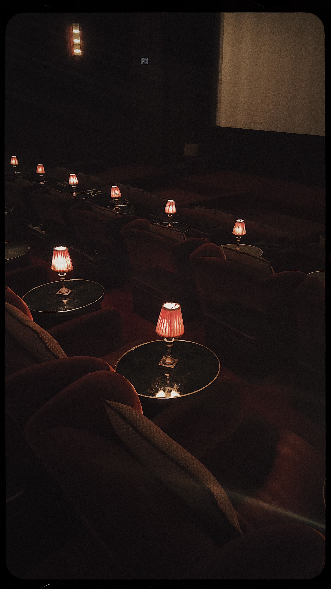

01
Timeliness
Recent partial-year figures show that summer 2026 attracted over 40 per cent more cinema visits than the same period in 2025. The full year is not yet complete.
From statistics to a story.
A content package exploring Swedish cinema attendance.

A complete content package built around one angle: cinema attendance in Sweden has fallen by approximately 46 per cent since 2016, but summer 2026 shows early signs of a possible turnaround. Everything below is designed to give journalists clear evidence they can examine and verify.
Five news values applied to one central message.
Recent partial-year figures show that summer 2026 attracted over 40 per cent more cinema visits than the same period in 2025. The full year is not yet complete.
The development points to a wider question about how people engage with film and culture after the pandemic.
A long decline since 2016 is followed by an unexpectedly strong summer — a development with a clear contrast.
Going to the cinema is easy to relate to. Many people have their own experiences and opinions about why they visit more often or less frequently.
Figures, sources and visuals are brought together, giving journalists clear material to verify and develop into a story.
Annual cinema visits, in millions. Lighter points indicate the pandemic years. The summer 2026 figure is shown separately because it is not a full-year total.
Summer 2026 attracted over 40 per cent more cinema visits than the same period in 2025. This figure refers to the summer only. A full-year figure for 2026 is not yet available.
The dashboard visualises Swedish cinema attendance between 2016 and 2025. The line chart shows the sharp decline during the pandemic and the subsequent recovery, which has not yet returned to pre-pandemic levels. The Nordic comparison also shows that Sweden has fewer cinema visits per person than Denmark and Norway.
Open the dashboard in a new window ↗
The embedded dashboard contains Swedish labels.
This spreadsheet contains the underlying data for the analysis of Swedish cinema attendance. It includes the figures used to create the project's charts and visualisations.
If the spreadsheet does not appear, you can open the dataset in Google Sheets . The original spreadsheet is in Swedish.
Purpose: establish credibility and encourage discussion about the development.
Lowe Nasiell
Growth Marketing student @ Berghs School of Communication
2h · 🌐
A professional author profile, clear figures and an original chart make the content easier to understand and discuss.
Four slides designed to spark curiosity and engagement. Select a dot or use the arrows to explore.
A draft bringing together the news angle, the figures and the key qualifications.
Press release
Cinema attendance in Sweden has fallen by approximately 46 per cent since 2016, from 17.8 million visits to 9.7 million in 2025. This is the lowest non-pandemic annual total in the period examined. Recent summer figures for 2026 meanwhile show an increase of over 40 per cent compared with the same period the previous year.
Attendance recovered to around 10–11 million during 2022 and 2023, before declining again in 2024 and 2025. The stronger summer of 2026 therefore raises the question of whether the direction may be changing. As the full year is not yet complete, it is too early to establish a confirmed reversal of the trend.
| Period | Cinema attendance | Source |
|---|---|---|
| 2016 | 17.8 million | Swedish Cinema Owners' Association |
| 2025 | 9.7 million | Swedish Film Institute |
| Summer 2026 | Over 40 per cent higher than summer 2025 | Published industry figure |
Open the original press release →
A separate Swedish-language page containing the press release.
The sequence used to make the content clear and relevant.
Open with the key figure to make the development immediately clear.
The timely hook is the strong summer of 2026. The figure has been published, but the full-year outcome is not yet available.
Connect the figures to changes in how people engage with film and culture after the pandemic.
Bring together graphics, sources and underlying data so they are easy to examine and verify.
Finish with a specific offer of the full dataset, graphics or further information.
The chart, press release and social posts are based on the following source material.
Open the complete data documentation →
Each figure with its source, qualifications and calculation.
Original documentation in Swedish.
This content package was created to make the development of Swedish cinema attendance clear and easy to understand. The figures have been compiled, the sources are disclosed and the graphics are prepared for several different channels.
The angle combines a long-term decline since 2016 with the first signs of a possible turnaround during summer 2026. As the year is not yet complete, the summer figure is presented as partial-year data rather than evidence of a confirmed reversal of the trend.